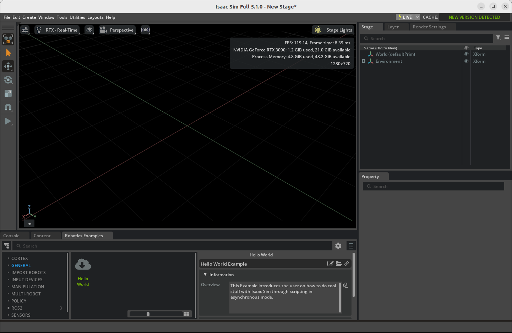
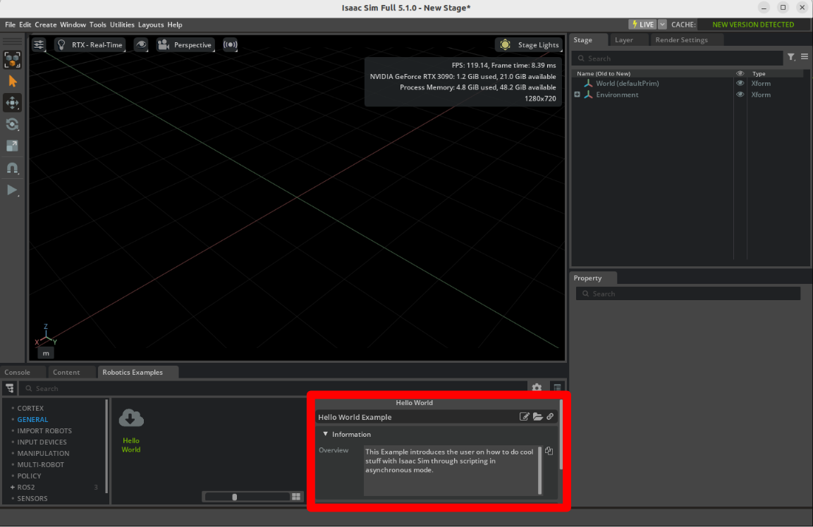
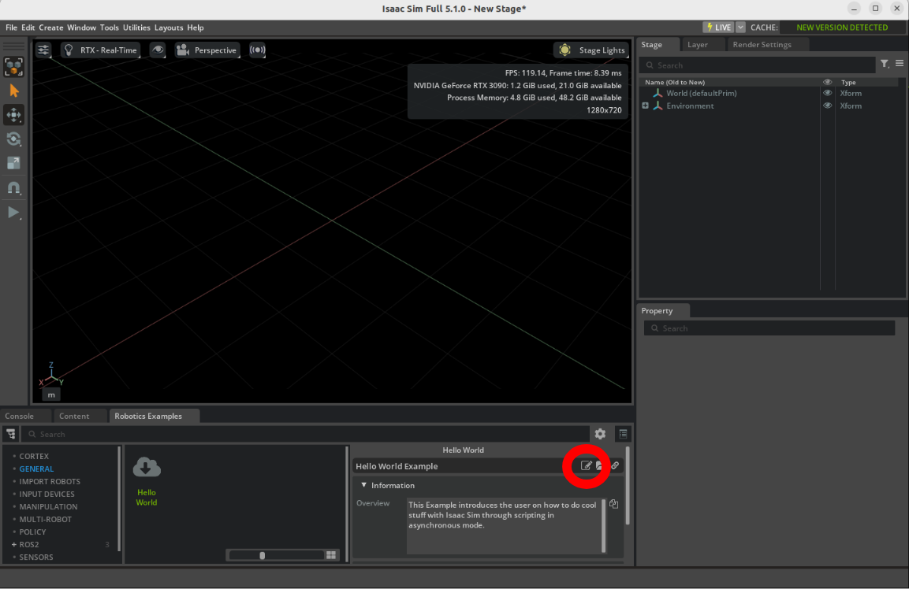
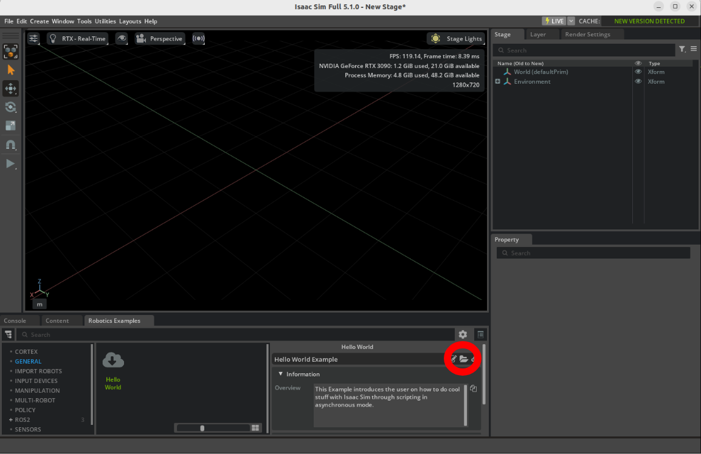
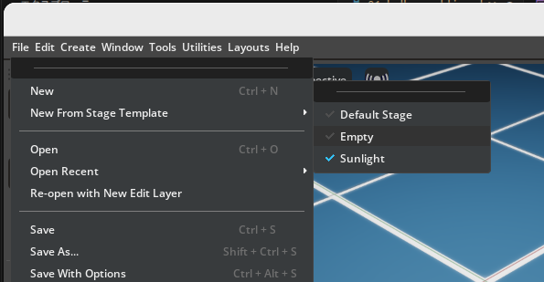

Hello World¶
学習目標¶
このチュートリアルを修了すると、以下の内容を習得できます:
- Core API で定義される World と Scene の作成方法
- Stage に剛体(rigid body)を追加し、NVIDIA Isaac Sim で Python を使用してシミュレーションする方法
- Extension Workflow と Standalone Workflow の違い
はじめに¶
前提条件¶
- このチュートリアルには、Python および非同期プログラミングの中級レベルの知識が必要です。
- チュートリアルを開始する前に、Visual Studio Code をダウンロードしてインストールしてください。
- チュートリアルを開始する前に、クイックチュートリアルを確認してください。
Workflow¶
Isaac Sim はより大規模なソリューションの構成要素であり、単独でも使用可能です。そのため、同じ目的を達成するために複数の方法が存在します。これらの異なる方法を「Workflow」と呼びます。
3つの Workflow の詳細（クリックで展開）
| Workflow | 主な特徴 | 推奨用途 |
|---|---|---|
| GUI | 視覚的で直感的なツール | ワールド構築、ロボット組み立て、センサー取り付け、OmniGraphs によるビジュアルプログラミング |
| Extension | 非同期実行、ホットリロード、適応型物理演算ステップ | Python スニペットのテスト、インタラクティブ GUI 構築、リアルタイム応答が必要なアプリケーション |
| Standalone | 物理演算・レンダリングのタイミング制御、ヘッドレス実行 | 強化学習の大規模トレーニング、体系的なワールド生成 |
- GUI Workflow: コードを書かずに、GUIの操作だけでシミュレーション環境を構築できます。
- Extension Workflow: Isaac Sim 内で Python スクリプトを拡張機能として実行します。ホットリロード（コード保存で即反映）が使えるため、開発効率が高いです。
- Standalone Workflow: Isaac Sim を Python スクリプトから直接起動します。物理演算やレンダリングのタイミングを完全に制御できます。
以降のチュートリアルでは主に Extension Workflow を用いて説明しますが、Extension Workflow で生成する物体や各種設定は GUI からも行えますし、スクリプトを書き換えることで Standalone Workflow に置き換えることも可能です。
Hello World サンプルを開く¶
まず、Hello World サンプルを開きます。
-
Windows > Examples > Robotics Examples をアクティブにして、Robotics Examples タブを開きます。

-
Robotics Examples > General > Hello World をクリックします。
 -
ワークスペースに Hello World サンプル拡張機能のウィンドウが表示されていることを確認してください。
 -
Open Source Code ボタンをクリックし、Visual Studio Code で編集可能なソースコードを起動します。
 -
Open Folder ボタンをクリックし、サンプルファイルを含むディレクトリを開きます。

このフォルダには以下の3つのファイルが含まれています：
hello_world.py— アプリケーションのロジック部分hello_world_extension.py— アプリケーションの UI 要素__init__.py
サンプルの動作確認¶
試しに Hello World サンプルをロードしてみましょう。
-
LOAD ボタンをクリックしてワールドを読み込みます。

-
読み込んだワールドを消して最初の状態に戻すには、File > New From Stage Template > Empty をクリックして新しいステージを作成し、保存確認で Don't Save をクリックします。

-
LOAD ボタンをクリックしてワールドを再度読み込みます。
-
Open Source Code ボタンをクリックし、
hello_world.pyを開いて Ctrl+S を押してホットリロードします。ワークスペースから Hello World のウィンドウが消えます（拡張機能が再起動されたため）。
-
Robotics Examples メニューを再度開き、LOAD ボタンをクリックします。
それでは、この Hello World サンプルに追記する形で進めていきましょう。
コード概要¶
ここからは、hello_world.py のコードを段階的に拡張していきます。まず、サンプルの基本構造を確認しましょう。
この例は BaseSample を継承しています。BaseSample は、ロボティクス拡張アプリケーションの基本設定を行うボイラープレートクラスで、以下の機能を提供します：
- ボタン操作でアセットと共にワールドを読み込む
- 新しいステージ作成時にワールドをクリアする
- ワールド内のオブジェクトをデフォルト状態にリセットする
- ホットリロードを処理する
World は、シミュレータとモジュール化された方法で対話するための中核クラスです。コールバックの追加、物理演算のステップ実行、シーンのリセットなど、多くのイベントを管理します。
Scene は World が内部に持つインスタンスで、USD Stage 内のシミュレーションアセットを管理します。アセットの追加・操作・検査・リセットのための簡易 API を提供します。
シングルトン・ワールド¶
World はシングルトンです。つまり、NVIDIA Isaac Sim の実行中に存在できる World は1つだけです。
前のセクションでは self.get_world() を使って World を取得しましたが、World.instance() でも同じインスタンスを取得できます。両者は同一のオブジェクトを返しますが、使い分けの目安は以下の通りです：
| 取得方法 | 使いどころ |
|---|---|
self.get_world() |
BaseSample を継承したクラス内（通常のチュートリアル開発） |
World.instance() |
BaseSample を継承していない別のファイルや拡張機能からアクセスする場合 |
以下のコードは、World.instance() を使ったアクセス方法を示しています。BaseSample を継承していないクラスや別の拡張機能からでも、この方法で現在の World にアクセスできます。
シーンへの追加¶
Python API を使用して、シーンに剛体として立方体を追加します。
コードを保存してシミュレーションを確認します：
- Ctrl+S を押してコードを保存し、Isaac Sim をホットリロードします。
- Hello World サンプル拡張機能のウィンドウを再度開きます。
- File > New From Stage Template > Empty でワールドを新規作成してから、LOAD ボタンを押します。
setup_sceneで変更を加えた場合はこの操作が必要です。 - PLAY ボタンを押して動的キューブのシミュレーションを開始し、落下する様子を確認します。

注釈
コードを編集するたびに、Ctrl+S を押して保存し、Isaac Sim をホットリロードしてください。
オブジェクトのプロパティの確認¶
次に、キューブのワールド座標と速度を出力してみます。
ここで新しいメソッド setup_post_load が登場します。setup_scene との違いは以下の通りです：
| メソッド | 呼ばれるタイミング | 用途 |
|---|---|---|
setup_scene |
空のステージから初回ロード時のみ | アセットの配置 |
setup_post_load |
LOAD ボタン押下後に毎回 | 物理ハンドルが有効になった後の初期化処理 |
setup_post_load は物理シミュレーションの1ステップ後に呼ばれるため、オブジェクトの座標・速度などの物理プロパティを取得できます。
シミュレーション中のオブジェクトプロパティの継続的検査¶
物理演算ステップが実行されるたびに、キューブの姿勢と速度を出力します。
Workflow で述べたように、Extension Workflow ではアプリケーションは非同期で実行されており、物理演算のステップタイミングを直接制御できません。ただし、物理演算コールバックを登録することで、各物理ステップの前に任意の処理を実行できます。
ワールドのリセット¶
シミュレーション中にオブジェクトを初期状態に戻したい場合は、RESET ボタンを使用します。リセット後に再度初期化が必要な処理は setup_pre_reset および setup_post_reset コールバックで行えます。
ヒント
world.reset() を呼ぶと、すべてのオブジェクトが setup_scene で設定した初期状態に戻ります。Standalone Workflow では、アセット追加後に world.reset() を呼ぶことで物理ハンドルが正しく初期化されます。
サンプルをスタンドアロンアプリケーションに変換¶
注釈
Windows では python.sh の代わりに python.bat を使用してください。
Workflow で述べたように、Standalone Workflow では Python から Isaac Sim を直接起動し、物理演算とレンダリングのタイミングを完全に制御できます。
Standalone スクリプトは Isaac Sim 同梱の Python インタプリタ（python.sh）で実行する必要があります。このインタプリタは Isaac Sim のインストールディレクトリ直下にあります。
スクリプトの配置場所は任意ですが、Hello World サンプルと同じ user_examples ディレクトリに置くのが分かりやすいです：
<Isaac Sim インストールディレクトリ>/
├── python.sh # Isaac Sim 同梱の Python インタプリタ
└── exts/
└── isaacsim.examples.interactive/
└── isaacsim/examples/interactive/
└── user_examples/
└── my_application.py # ← ここに作成
ヒント
python.sh（Windows では python.bat）は Isaac Sim に必要なすべての依存関係を含む専用の Python 環境です。システムにインストールされた Python で実行するとモジュールが見つからずエラーになります。
新しい my_application.py ファイルを上記のディレクトリに作成し、以下のコードを記述します：
Isaac Sim のインストールディレクトリに移動し、以下のコマンドでスクリプトを実行します：
cd <Isaac Sim インストールディレクトリ>
./python.sh ./exts/isaacsim.examples.interactive/isaacsim/examples/interactive/user_examples/my_application.py
まとめ¶
このチュートリアルでは以下のトピックを扱いました：
- World および Scene クラスの概要
- Python による Scene へのコンテンツ追加
setup_post_loadによる初期化と物理プロパティの取得- 物理演算コールバックの追加
- Standalone アプリケーションへの変換
次のステップ¶
次のチュートリアル「Hello Robot」に進み、シミュレーションにロボットを追加する方法を学びましょう。
注釈
次のチュートリアルでは主に Extension Workflow を使用して開発を進めます。ただし、本チュートリアルで扱った内容を踏まえれば、他の Workflow への変換も同様の手順で行えます。